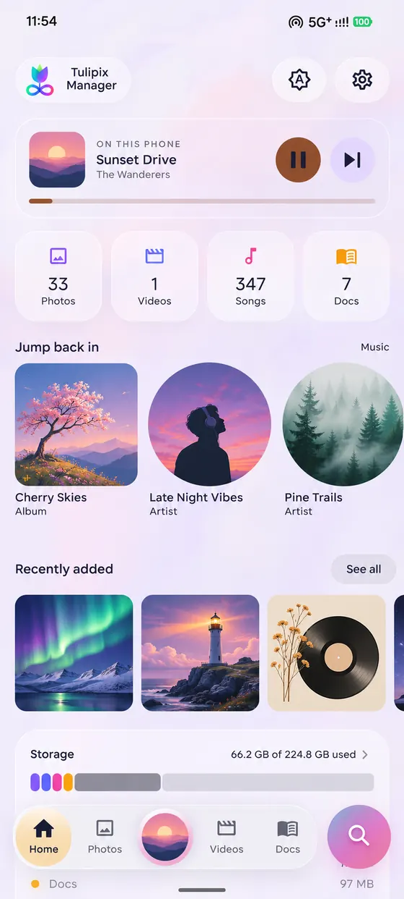
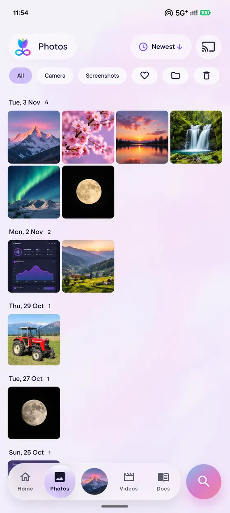
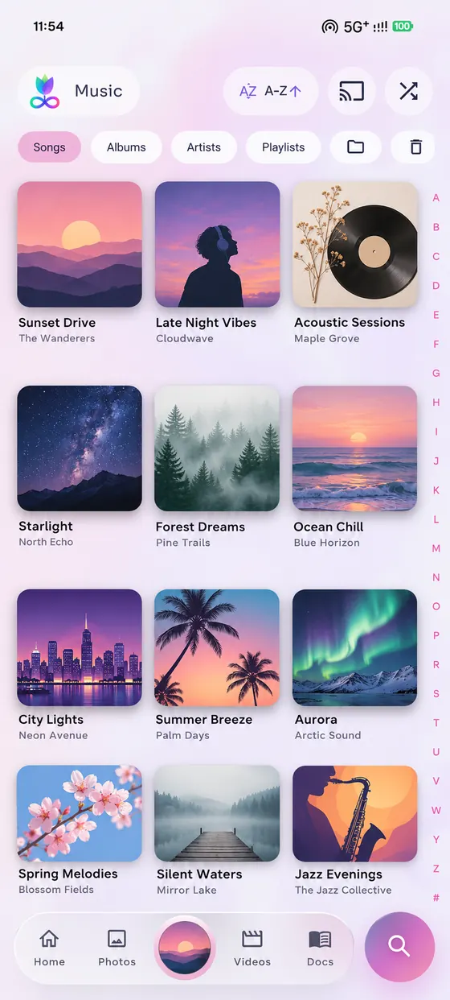
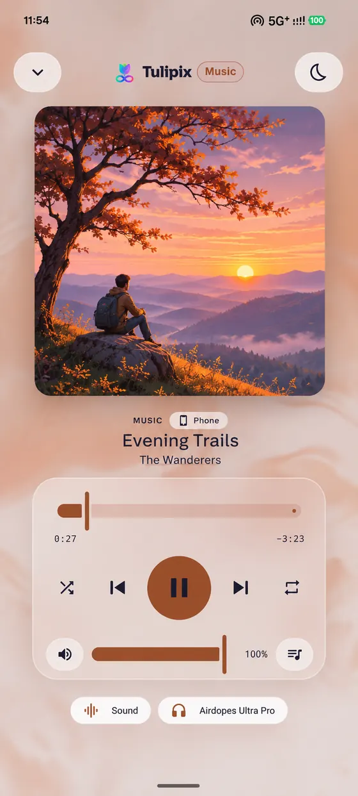
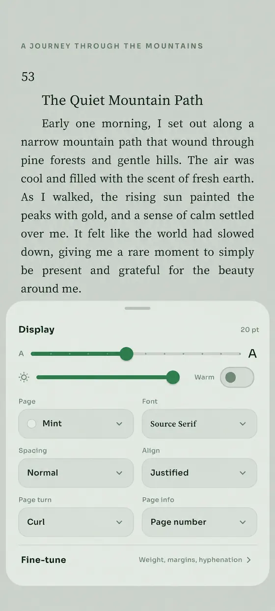
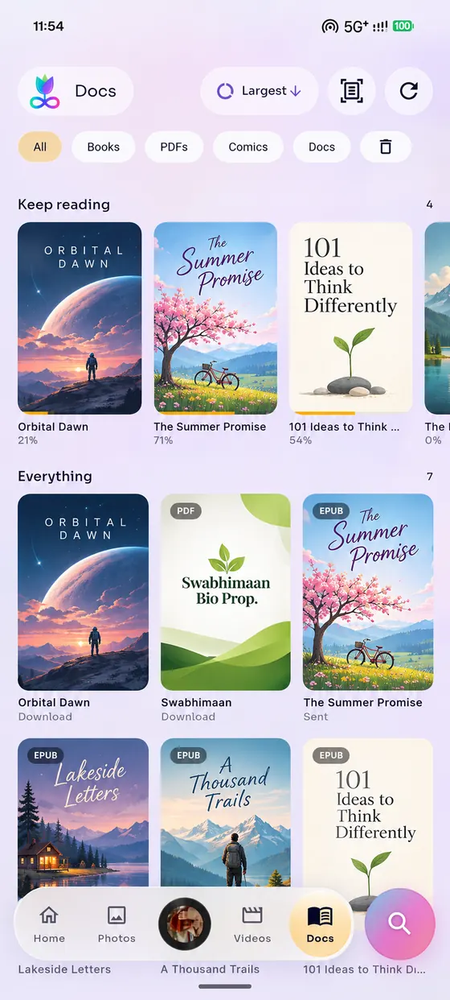
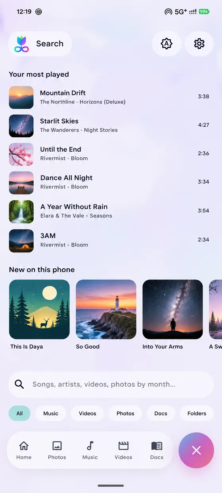
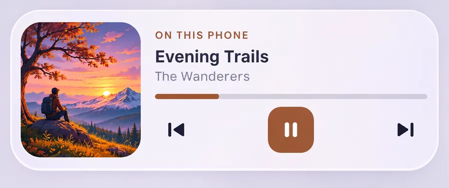

Everything on your phone, together.
Tulipix Manager brings your photos, music, videos, books, comics and PDFs together. It works offline, with no account.
Free for Android 8.0 and newer.
Tulipix Manager brings your photos, music, videos, books, comics and PDFs together. It works offline, with no account.
Free for Android 8.0 and newer.

Open the app and what you were doing is already there: the song, the film or the book. Everything else is one tap away.
Scroll your whole library by day. Open a picture, zoom in, swipe to the next. Nothing is uploaded; it all reads from your phone.



Songs, albums, artists, playlists and folders, built from the music already on your phone. It keeps playing with the screen off, and comes back to where you stopped.
Open any EPUB and set the page the way you like it. Everything you change is remembered for the next book.
Read aloud needs a 64-bit phone, which is nearly every phone made in the last several years.


Everything you read sits together, with Keep reading at the top. CBZ and CBR comics open at once, even big volumes.
Tap the round button and type. It looks through your songs, artists, videos, photos by month and documents at once.

Put Now playing on your home screen and control your music without opening the app. Memories shows pictures from this day.

The play button and the bar take their colour from the song's cover.
Play, pause, next, seek and shuffle work without opening the app.
Small, medium and large. The larger ones show what plays next and the lyrics, line by line.
Lock pictures and videos away in an encrypted folder. It opens with your fingerprint, your face or your screen lock, and checks that nothing in it has been changed.
Finds the biggest videos, screenshots older than a month and large documents, then lets you clear them in one go. You choose what goes.
Light and dark themes, a layout for when you turn the phone sideways, and gentle haptics you can tune or turn off.
It clears its own temporary files each time it starts, so it does not quietly fill your storage.
There is nothing to sign up for and nobody to log in to. Open the app and it is ready.
The app has no analytics and no crash reporting that sends anything away.
The only thing that can leave your phone is a lyrics look-up (song, artist, album, length) to the free LRCLIB service, and it is off until you turn it on. Read the privacy policy.
No. Tulipix Manager is a complete app on its own. It is the offline version of the Tulipix companion, and it never looks for a computer.
On Google Play, or as a direct download: tulipix-manager-app.apk. They are the same app. Pick Google Play for automatic updates.
The app is free on Google Play and as a direct download.
Android 8.0 or newer. Read aloud needs a 64-bit phone; on others the button is hidden and everything else works.
Because that is what it shows you. It reads them on your phone to build the library and never sends them anywhere.
Anywhere you can pick them from. In the Google Play version you add files with Android’s file picker and Tulipix keeps a copy in its Docs. In the version from this site it can look through the whole phone for them.
Files in your normal library are untouched. Files in the Private folder are encrypted with a key that lives only on that phone, so they cannot be recovered. Keep your own copy of anything you cannot lose.
CBZ and CBR (including RAR 3 to 5). Comics with a password cannot be opened.
Write to mail@atishaksharma.com.
Tulipix Manager is free on Google Play. You can also download the APK and install it yourself.
The APK is the direct version: it works on Android 8.0 and newer, can look through your whole phone for books and comics, and updates when you install the next APK over it. Android will ask you to allow installs from your browser the first time.